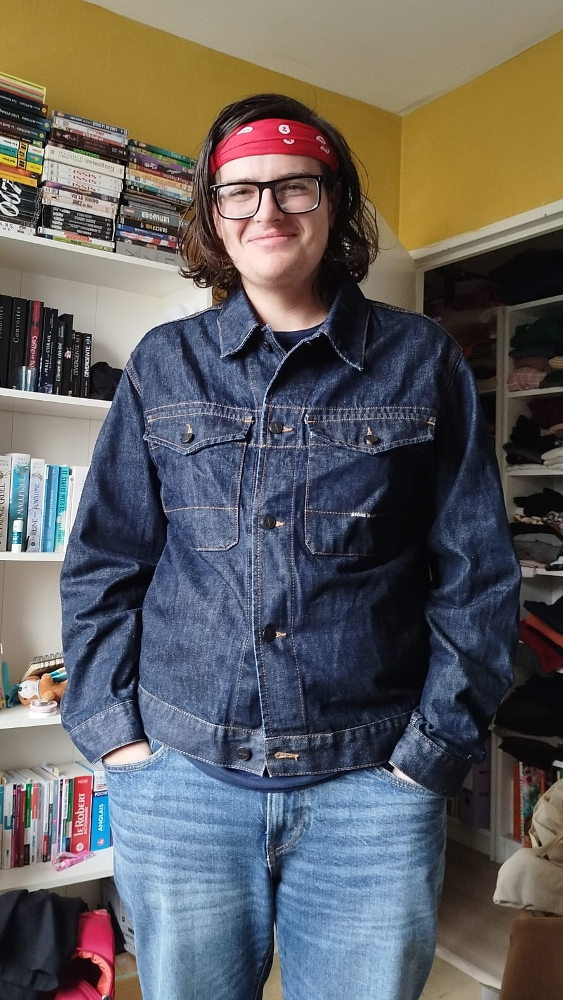

MACQUET Aristote
Recherche travail mi-temps

Mon profil :
Mes points forts :
- Calme - patient - réfléchi
- Trilingue : Français, Espagnol et Anglais
- Doué en Python, HTML et CSS principalement
- Amateur de culture générale et de lecture
- Curieux et ouvert d'esprit
Mon parcours professionnel :
- 2025-maintenant. Etudiant en B.U.T. Informatique à l'université de Bourgogne Europe.
- 2024-2025. Obtention du Baccalauréat Général au lycée St-Bénigne.
- 2022-2024. J'ai gardé des jeunes et/ou donné des cours d'espagnol.
- Juin 2022. Stage estival au Cassissium (musée-boutique).
- 2017-2022. Cursus scolaire en Espagne.
Des projets montrant mon éventail de capacités :
- Mon propre site, répertoriant des fiches de révision faites par moi et mon équipe de devs (juste un copain)
- Le jeu du Morpion en HTML, CSS et JS.
- Le jeu du Nombre Mystère en Python.
- Le jeu du 2048 en Python et en PyCharm.
- Un codeur et un décodeur ASCII en Python.
Pour voir plus de détails techniques (captures d’écran, explications, codes complets etc),
consultez ma page Projets.
Je souhaite postuler pour :
Un emploi à mi-temps, qui pourrait être compatible avec mon emploi du temps d'étudiant en informatique à l'université.
Merci d'avoir pris le temps de lire mon CV.
Bien à vous.
Aristote
{kind=link}